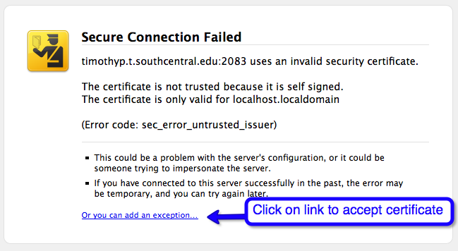
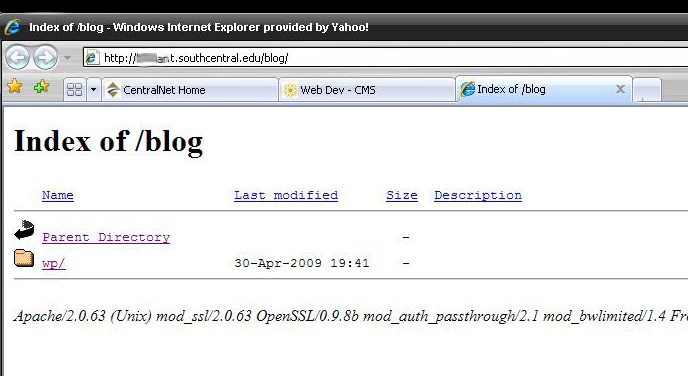

Can you just give me a checklist to follow to install WordPress?
1. Set up a database using the cPanel out on the t.server
Here are some suggestions for the names:
Database name: wordpress (Your username will be automatically added as a prefix: pedroj_wordPress)
Database userName: wordpress (Your username will be automatically added as a prefix: pedro_wordpress). It doesn't matter that the database and username are the same.
Database password: Please99! (No prefix is added.)
Don't forget to "Add" the database name and the database username together. This will bring you to a page showing Privileges. Check the "All Privileges" box.
You should see a box in the cPanel database screen that shows them both together. Something similar to this:

Write down this information and label it: "WordPress Database Login Information"
2. Download the current version of WordPress from http://Wordpress.org
3. Unzip the file (right-mouse click on the zip file and select "unzip/uncompress here"
4. Change the name of the folder that was unzipped to "blog"
5. FTP this blog folder (of unzipped files) up to the t.server. Make certain the folder is inside of public_html.
6. Set the permissions so WordPress can make changes during the installation.
On the t.server, using FileZilla, right-mouse click on the "blog" folder and choose "set permissions".
Type in "777". This should cause all of the boxes to be checked.
Make certain the box "Recursive through the folders" so all the inside files and folders get set to 777 as well.
7. Run the installation by going to your web page: http://yourUserName.t.southcentral.edu/blog
8. If WordPress says there isn't a configuration file, click on the link or button so WordPress will create one for you. (This is why we set the permissions so anyone could read/write/or run the programs in the folder.)
9. Use the "WordPress Database Login Information" (that you wrote down) to complete the installation.
10. Write down the user name and password you decide to use for Admin. (It will look weird. Write it down carefully so you can read it later when you need it.)
11. Once you are inside of WordPress, in the Administration pages, create at least one new WordPress user.
UserName: your first name. last name Example: pedro.johnson
Password: Please88! or something that is simple to remember. (Your first address, name of your first pet, and a !)
Make certain you set this user to be of type Admin (not editor or anything else. You want this special user to have all editing rights.)
Write this down (so you can read it later.) Label it: "WordPress Admin user" UPPER/lower case matter.
12. Anytime you need to access the WordPress Administration panel put wp-admin on the end of the URL.
For example: http://youruserName.t.southcentral.edu/blog/wp-admin
I'm watching the video and following the steps for getting to the c panel but when I use the address https://myfirstnameLastInitial.t.southcentral.edu:2083, I get an error message saying that address uses an invalid security certificate. Any ideas how to fix this?

Click on the link at the bottom of the page "Or you can add an exception" and agree with each item that displays. You don't have to view the certificate, just okay everything so that a certificate is saved on your computer telling the browser that the files on your t.server are safe to view.
When I type in my web site name t.southcentral.edu/blog I get the index screen and have to click on the wp to get to the blog. How do I fix this?

You’ve made things too complicated by setting up extra folders.
To get to your blog the user has to type: .t.southcentral.edu/wp/blog
The wp folder is just an extra layer that gets in the way.
The best thing to do is start from scratch. It may seem like a
lot but it is much faster than trying to find all the references to the folder structure
in the database and trying to fix the WordPress framework.
(1) Create a "blog" folder from the zip file you downloaded from WordPress
When you download the files from WordPress they are zipped up.
When you unzip that folder is named WordPress with a version number.
You want to change that folder name to “blog” and that is what you FTP out to your
server.
(2) Delete the tables that were created when you first installed WordPress on your server
Here is a movie showing how to do this. http://blip.tv/file/2052777
(It only takes a few minutes
using cPanel and PHPMyAdmin)
(3) Upload the blog folder you created in step 1 up to the t.server using FileZilla.
Put it in the root directory (public_html) Here is a screen shot showing you how the files should look:

(4) Re-install WordPress by going out to the blog and in http://firstnameLastInitial.t.southcentral.edu/blog.